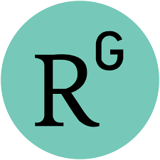
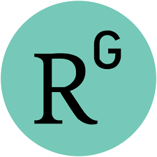
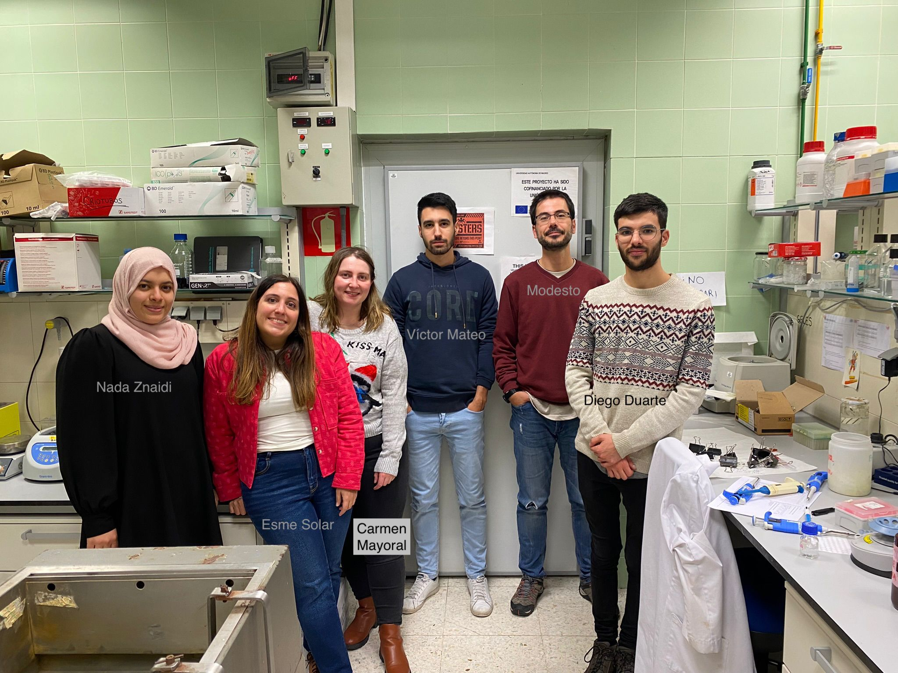
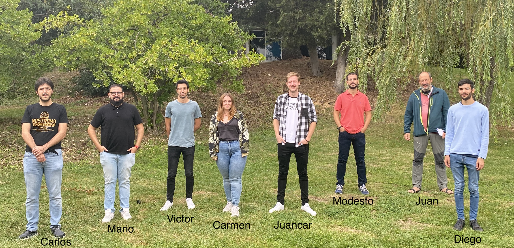

People
Current Members
Modesto Redrejo Rodríguez (PI, Assistant Professor) 
 
 
Modesto is Assistant Professor (in Spanish “Profesor Ayudante Doctor”) at the Biochemistry Department of the School of Medicine of one of the largest universities in Madrid, the Madrid Autonomous University (UAM).
Since his PhD thesis, working on DNA repair mechanisms of ASFV (large DNA virus), he has been very interested in DNA replication and repair mechanisms and how these mechanisms evolved. After that, he moved to the Murat Saparbaev’s lab at the Gustave Roussy Institute (Villejuif, nearby Paris) to work on Base Excision Repair enzymes. Then, in 2011, he moved back to Madrid as Postdoc and later on Senior Research Associate in the Margarita Salas’ lab at the Molecular Biology Center (CBM).
He is very interested in the use of multidisciplinary approaches, using biochemistry, structural biology, genetics and bioinformatics to deal with biological problems. A full list of Modesto’s publications can be found here.
Juan J. Arredondo Lamas (Associate Professor)
Juan is a very experienced researcher in genetics and molecular biology of model organisms, particularly Drosophila melanogaster. After several months of sharing the lab with us and providing very interesting “outsider” discussions, he decided to join the crew. He will be very helpful in the students’ supervision and focus in the biological role of pipolins.
Esmeralda Solar Venero (Postdoc, 2022-)
Esme is an expert molecular microbiologist from Buenos Aires. She is highly interested in pipolins diversity and mobilization.
Carmen Mayoral Campos (PhD Student, 2019- )
Carmen is graduated in Biology and MSc in Biomolecules and Cell Dynamics (UAM). She is working in structure-function studies of piPolB, focused on understanding DNA priming capacity of these new DNA polymerases.
Víctor Mateo Cáceres (PhD student, 2019-)
Víctor started his BSc thesis working on the biological role of piPolBs in bacteria. His project involved the characterization of a piPolB mutant in the context of a naturally occurring pipolin from E. coli. However, during the Covid19 lockdown, he decided to switch into a Bioinformatics project and then enrolled in the Bioinformatics and Computational Biology. During the first year of his Master he got a “Collaboration Fellowship” that will help us to finish the ExplorePipolin pipeline.
Diego Duarte Zara (Master Student, 2021-)
Diego joined the lab in 2021 to work on piPolB biological role for his Bachelor’s thesis, working with Juan and Carmen. He obtained very interesting results that we will further explore during his Master’s thesis during 2023.
Nada Znaidi (Visiting PhD student, 2022-)
Nada is a PhD student from Université Tunis El Manar, directed by Prof. Samia Réjiba. Since September 2022, she spends some months ever year in our lab, analyzing the prevalence and genetic structure of pipolins from E. coli clinical isolates.
Lab pictures



Alumni
Juan Carlos Martín Esteban (MSc Student, 2020-2022)
Alejandro Serrano Sánchez (BSc Thesis, 2022)
Carlos D. Ordóñez Cencerrado (PhD Student, 2017-2022)
Carlos earned an MSc in Virology and he is interested in molecular biology, virology, biochemistry, structural biology and biotechnological application of virus. He carried out his PhD thesis working on the study of Translesion Synthesis capacity of B-family DNA polymerases also can carry out a faithful and processive DNA replication. He also performing structural-function studies and analysis of the influence of metal cofactor during the process.
Find him on Researchgate,  @CarlosDOC_ or by e-mail: cordonez@cbm.csic.es
@CarlosDOC_ or by e-mail: cordonez@cbm.csic.es
Mario Rodríguez Mestre (PhD Student, 2020-2021 )
Liubov Chuprikova (Bioinformatics MSc, 2019-2020)
Liuba developed ExplorePipolin, a pipeline for the annotation and characterization of pipolins. Her Master thesis was carried out under the joint supervision of Modesto and María de Toro, head of the Genomics and Bioinformatics facility of CIBIR, and an expert in the annotation of prokaryotic genomes and mobilome. We are grateful to Liuba’s help after her Thesis, which allowed us to publish ExplorePipolin in 2022.
Irene Díaz García (BSc Student, 2020-2021)
Lorenzo Vargas Román (BSc Student, 2020-2021)
Ana Lechuga Mateo (MSc and PhD Student, 2016-2020)
Ana carried out her MSc in Virology in Salas’ lab under Modesto’s supervision and then she decided to stay in the lab for Ph.D. She worked in two different but complementary aspects of Bam35 tectivirus biology. First, she is characterizing viral DNA binding proteins and their role in TP-DNA genome replication. Moreover, she has been the main responsible for the VirHost-omics project, using a Y2H screen and next-generation sequence to study virus-host relationships by high-through